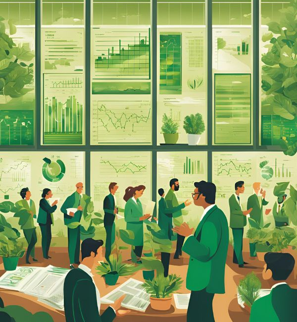
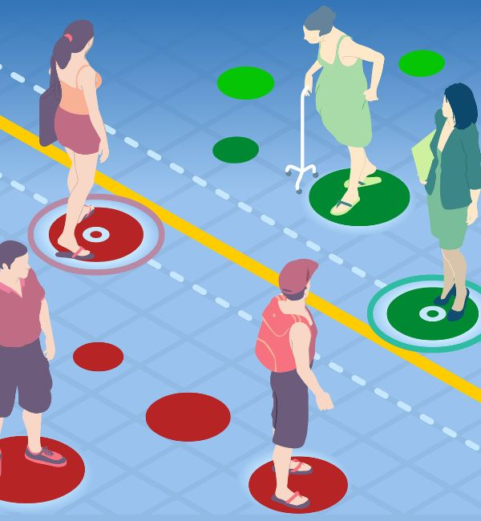
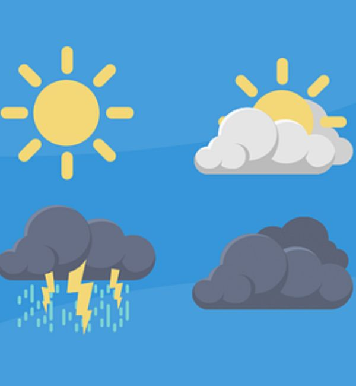

I am Auro:
lifelong learner, self-proclaimed philosopher,
and enthusiast of all
things finance and tech
About Me
Picture this: a realm where finance, tech, and a dash of quirky genius collide. That’s my playground! I’m obsessed with how data and cutting-edge technology can shake up the financial world, especially in the thrilling arenas of Quant Finance, Asset Management, VC, and PE. Numbers? I don’t just crunch them – I tango with them. Algorithms? I unravel their mysteries like a tech-savvy Sherlock Holmes. If you’re itching to chat about bold ideas or cook up some collaborative magic, hit me up on LinkedIn or drop me an email. Can’t wait to connect with fellow trailblazers who are as pumped as I am about leveraging data, tech, and strategic wizardry to make waves in the business and financial universe.
Download CVI pride myself on my
- Intellectual Robustness, Unwavering Perseverance, Analytical Perspective
Recent Experience
Caprae Capital Partners
Private Equity Intern
November 2024 - Present
At Caprae, I am embarking on a thrilling adventure with a company attempting to revolutionize the search fund space. Each week, I delve into a treasure trove of companies, uncovering hidden gems that align with a visionary investment thesis. Immersed in the excitement of uncovering trends, I develop as a strategic thinker, crafting bold plans for future growth. My communication skills flourish as I forge connections with potential clients through personalized, impactful outreach.
JSW Ventures
Investment Analyst Intern
July 2024 - September 2024
At JSW, I dove headfirst into the exhilarating world of venture capital, exploring the dynamic tech landscape. My days were spent unraveling the stories of innovative startups, meticulously assessing their potential to disrupt and thrive. My analytical prowess shone as I forecasted growth in the AI sector and scrutinized industry comparables through a data-driven approach to uncover strategic insights. Presenting my findings to seasoned associates and managing partners was a thrilling culmination of my internship, where I showcased my ability to translate complex data into compelling investment narratives.
Education
University of California, San Diego
Bachelor in Business Economics
September 2022 - June 2025
My fascination with the efficient allocation of resources led me to pursue an undergraduate degree in business economics with a minor in finance. My discovery of the usefulness of data-driven computational approaches to solving financial issues fueled an additional minor in Computational Social Sciences. I am completing my coursework with honors and finishing a four year degree in a little under three years.
Delhi Public School, Navi Mumbai
High School Diploma
May 2007 - April 2022
This place is my origin story. I spent too many years of my life here to recall any one specific worth mentioning here. My best attempt is this: I pursued a holistic education and learnt boundless amounts about the arts and sciences, with a large focus on mathematics, computer science, and the natural sciences. This was the platform for my initial exposure to academics and understanding what I really want to pursue in the future. This was where I discovered my hunger for constant of knowledge and the traits that till this day continue to shape who I am.
Projects
Here are some of my favorite projects. Feel free to check them out and give me your thoughts!
-
Python (Jupyter Notebooks)Green Signals.
-
Python (Jupyter Notebooks)Types of AlgoTrading.
-
Python (Jupyter Notebooks)Unsupervised ML Trading.
-
Python (Jupyter Notebooks)Sentiment Analysis Investing.
-
Microsoft Excel, WordAirbnb Valuation Analysis.
-
PythonHistorical Temperature Retriever.
Green Signals
A project analyzing if historical financial data be combined with ESG criteria to effectively predict future stock prices using Machine Learning, thereby facilitating data-driven and socially responsible investing.
- ESG Investing
- Machine Learning
Types of AlgoTrading
Developed and explored three distinct algorithmic trading programs in Python, namely: an equally weighted S&P500 strategy, a quantitative momentum strategy, and a quantitative value strategy.
- Value Investing
- Momentum Investing
- Quantitative Trading
Unsupervised ML Trading
This project aims to develop a trading strategy using unsupervised machine learning techniques to create and optimize a stock portfolio. By clustering stocks based on their features, we can form a diversified and optimized portfolio that aims to achieve the highest possible return for a given level of risk.
- Unsupervised Models
- Portfolio Optimization
Sentiment Analysis Investing
This project explores an investing strategy based on Twitter sentiment data to identify and invest in stocks with positive social media engagement. By leveraging sentiment analysis, the aim is to create a portfolio that can potentially outperform traditional market benchmarks.
- Sentiment-based Investing
Airbnb Valuation Analysis
This project utilized capital budgeting methods to compute the enterprise value and price per share for Airbnb post-IPO, adopting multiple different valuation methods including a mutliples-based approach, and a DCF model.
- Discounted Cash Flow Model
- Multiples-based Model
Historical Temperature Retriever
This basic python program allows users to collect and compare historical temperature data from two locations for any time period in the past 70+ years.
- Object Oriented Programming
Get In Touch
I love to connect and meet new people. Whether you have a question or just want to chat about finance, tech or life — please shoot me a message.